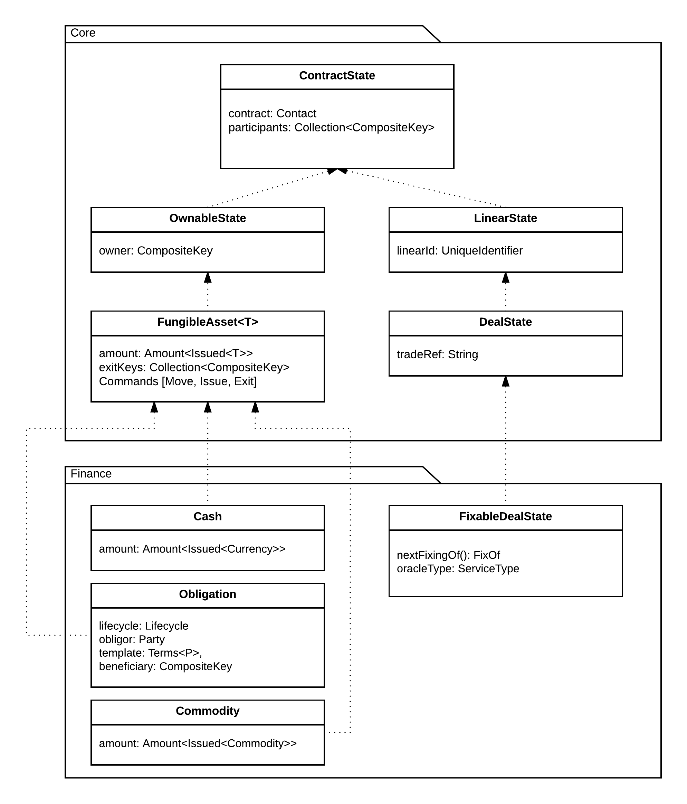

Financial model¶
Corda provides a large standard library of data types used in financial applications and contract state objects. These provide a common language for states and contracts.
Amount¶
The Amount class is used to represent an amount of some
fungible asset. It is a generic class which wraps around a type used to define the underlying product, called
the token. For instance it can be the standard JDK type Currency, or an Issued instance, or this can be
a more complex type such as an obligation contract issuance definition (which in turn contains a token definition
for whatever the obligation is to be settled in).
Note
Fungible is used here to mean that instances of an asset is interchangeable for any other identical instance, and that they can be split/merged. For example a £5 note can reasonably be exchanged for any other £5 note, and a £10 note can be exchanged for two £5 notes, or vice-versa.
Here are some examples:
// A quantity of some specific currency like pounds, euros, dollars etc.
Amount<Currency>
// A quantity of currency that is issued by a specific issuer, for instance central bank vs other bank dollars
Amount<Issued<Currency>>
// A quantity of a product governed by specific obligation terms
Amount<Obligation.Terms<P>>
Amount represents quantities as integers. For currencies the quantity represents pennies, cents or whatever
else the smallest integer amount for that currency is. You cannot use Amount to represent negative quantities
or fractional quantities: if you wish to do this then you must use a different type e.g. BigDecimal. Amount
defines methods to do addition and subtraction and these methods verify that the tokens on both sides of the operator
are equal (these are operator overloads in Kotlin and can be used as regular methods from Java). There are also
methods to do multiplication and division by integer amounts.
Issued refers to a product (which can be cash, a cash-like thing, assets, or generally anything else that’s
quantifiable with integer quantities) and an associated PartyAndReference that describes the issuer of that contract.
An issued product typically follows a lifecycle which includes issuance, movement and exiting from the ledger (for example,
see the Cash contract and its associated state and commands)
Financial states¶
In additional to the common state types, a number of interfaces extend ContractState to model financial state such as:
LinearState- A state which has a unique identifier beyond its StateRef and carries it through state transitions. Such a state cannot be duplicated, merged or split in a transaction: only continued or deleted. A linear state is useful when modelling an indivisible/non-fungible thing like a specific deal, or an asset that can’t be split (like a rare piece of art).
DealState- A LinearState representing an agreement between two or more parties. Intended to simplify implementing generic protocols that manipulate many agreement types.
FungibleAsset- A FungibleAsset is intended to be used for contract states representing assets which are fungible, countable and issued by a specific party. States contain assets which are equivalent (such as cash of the same currency), so records of their existence can be merged or split as needed where the issuer is the same. For instance, dollars issued by the Fed are fungible and countable (in cents), barrels of West Texas crude are fungible and countable (oil from two small containers can be poured into one large container), shares of the same class in a specific company are fungible and countable, and so on.
The following diagram illustrates the complete Contract State hierarchy:
Note there are currently two packages, a core library and a finance model specific library. Developers may re-use or extend the Finance types directly or write their own by extending the base types from the Core library.